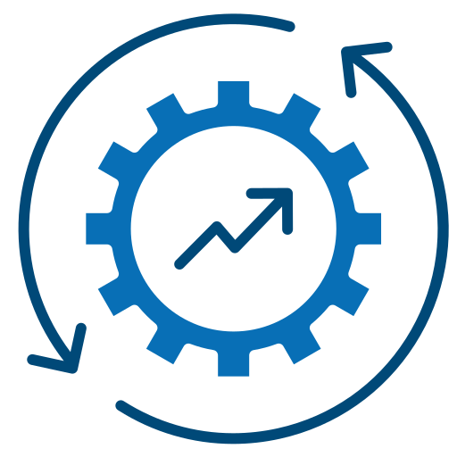
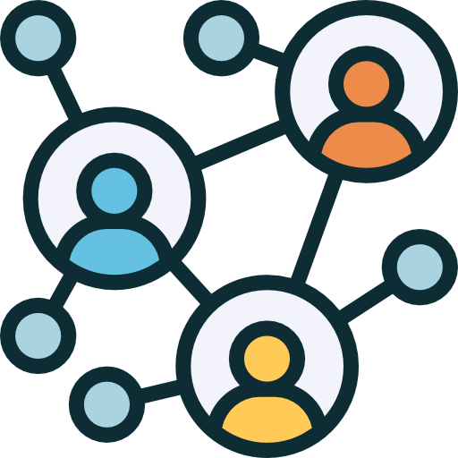
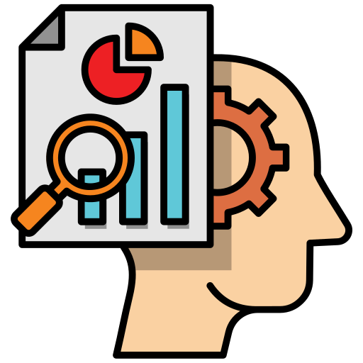

Transformando datos en
soluciones predictivas
Científico de Datos especializado en Machine Learning y análisis predictivo. Creando impacto real a través de la inteligencia artificial.
Acerca de mí
👋 ¡Hola! Soy Abraham, Científico de Datos especializado en Python y Machine Learning. Me apasiona transformar datos complejos en soluciones predictivas que generen impacto real.
Actualmente lidero dos proyectos innovadores: un sistema de monitorización del Alzheimer que fusiona datos multimodales para predecir riesgos y estratificar pacientes, y un motor de microcréditos inclusivo que democratiza el acceso financiero para trabajadores informales mediante análisis de datos alternativos.
Busco activamente una oportunidad donde pueda aportar mi experiencia en análisis predictivo, machine learning y visualización de datos para resolver desafíos complejos. Si buscas alguien que combine habilidades técnicas con visión de impacto social, ¡conectemos!
Mis Habilidades
Habilidades Técnicas
-

Python 3+ años
Lenguaje esencial para la ciencia de datos y machine learning. Manipulación avanzada de datos con Pandas, NumPy y visualización con Matplotlib y Seaborn.
-

SQL 3+ años
Dominio de consultas SQL para extracción, manipulación y análisis de datos en bases de datos relacionales como MySQL, PostgreSQL y SQLite.
-

Machine Learning 2+ años
Desarrollo y optimización de modelos predictivos con Scikit-learn y SnapML.
-

Web Scraping 2+ años
Extracción de datos web automatizada con BeautifulSoup y Scrapy.
-

Cloud Computing 1+ año
Despliegue y escalabilidad de modelos en Google Cloud e IBM Cloud Watson AI.
-

Visualización de Datos 2+ años
Análisis gráfico y dashboards interactivos con Folium, Plotly, Plotly Dash y Seaborn.
-

Feature Engineering 2+ años
Optimización de modelos mediante técnicas de transformación, encoding y extracción de características.
-

Optimización de Modelos 2+ años
Mejora de rendimiento con tuning de hiperparámetros y validación cruzada.
-

IA Generativa 1+ año
Aplicación de modelos avanzados como GPT y GANs para generación y análisis de datos.
-

Matemáticas 4+ años
Álgebra, cálculo y optimización aplicados a modelos de machine learning y análisis de datos.
-

Estadística 3+ años
Inferencia, regresión y pruebas de hipótesis para análisis de datos.
Habilidades Blandas
-

Resolución de Problemas
Capacidad para analizar y resolver problemas complejos con datos.
-

Comunicación
Explicación efectiva de análisis y resultados a diferentes audiencias.
-

Trabajo en Equipo
Experiencia colaborando en equipos de desarrolladores.
-

Pensamiento Crítico
Evaluación objetiva de datos y modelos para la toma de decisiones estratégicas.